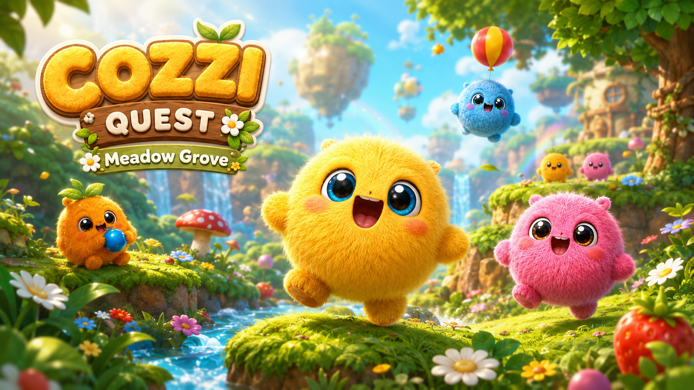
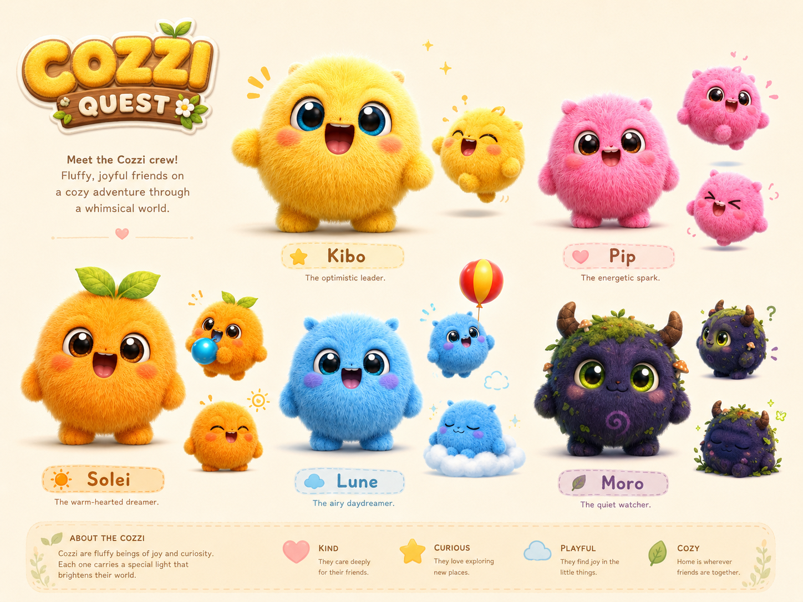
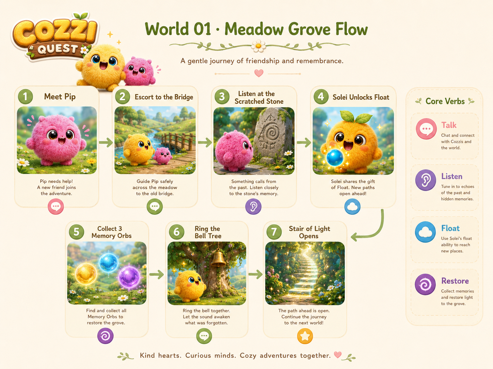
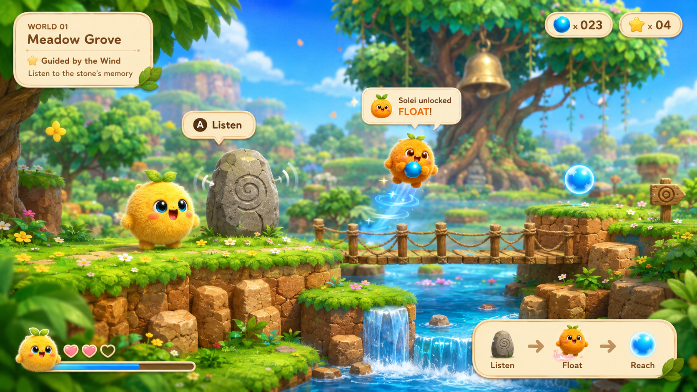
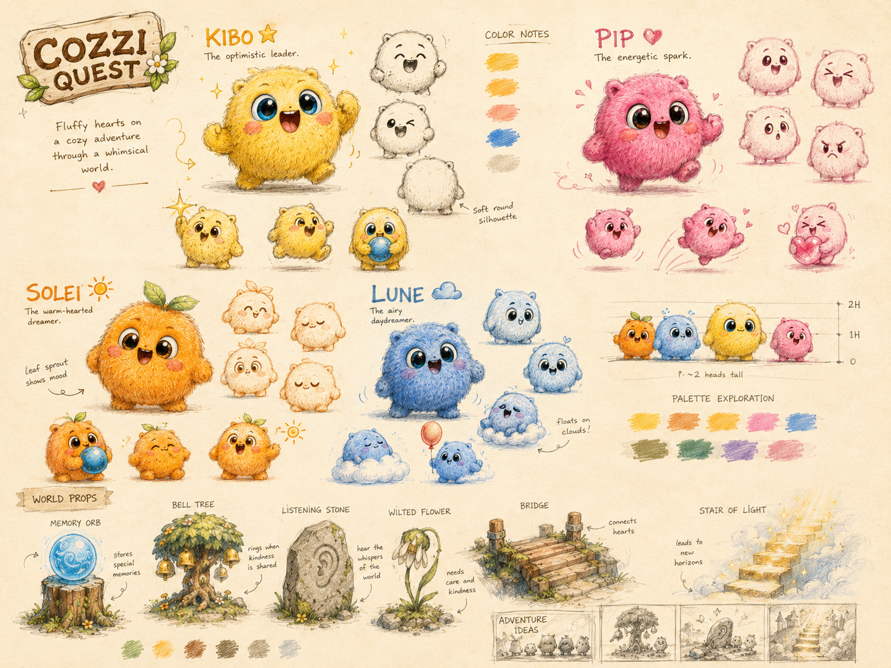
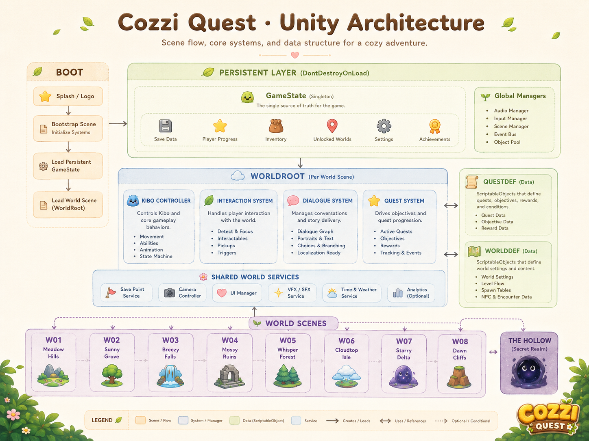

Cozzi Quest
A restoration platformer built from a playable HTML5 Meadow Grove slice into a Unity 2D production plan.
Overview
A platformer about repair, not combat.
Cozzi Quest follows Kibo, one of the last Cozzi. Kibo moves through a world that has lost the systems that once kept it alive. The core action is restoration. The first verbs are talk and listen. Later tasks add memory orbs and bell repair.
The first build is World 01, Meadow Grove. It is a complete single-file HTML5 vertical slice. It has no dependencies and makes no network calls. Procedural drawing removes the need for image files. The slice proves the core loop before the project moves into the Unity 2D production build.

Design constraints
The project needed a clear distance from genre defaults.
Before building the first level, I set constraints to prevent the project from becoming a generic creature platformer. Each rule was tied to a design decision in the slice.

Playable slice
World 01 is a complete Meadow Grove demo.
The HTML5 slice implements the first world from start to ending. The player learns the controls through three quests instead of reading a tutorial page.
The walk to the bridge
Kibo talks to Pip by a wilted flower. After the escort, Pip gives Kibo the river pebble.
The missing platform
The player reaches a gap that hop cannot cross. Listening at the scratched stone summons Solei, who unlocks float.
The unmoving bell
The player collects three memory orbs. One orb appears only after Listening at a flower patch. The bell opens the stair of light.
Controls
Arrow keys or A/D to walk. Z or Space to hop. Hold jump in air to float after Solei teaches it. E interacts. Holding C activates Listening zones.


Game feel
The first slice was tuned around forgiveness.
The platforming feel is defined by numbers, not mood language. The hop reaches about 114 px. Every intended step stays under 100 px. The gated gap is set at 240 px so the float unlock has a clear purpose.
Coyote time and jump buffering each last 7 frames. Releasing jump early clamps upward speed for variable hop height. Float caps falling speed at 0.85 px per frame and drains a small meter that refills on landing.
Build process
The slice uses one state machine for the player flow and HUD.
The web build is organized as one HTML file. CSS handles the HUD and dialogue box. It also controls overlays and touch buttons. The fade layer is handled there too. JavaScript handles input and WebAudio. Separate systems handle world data and physics. Listening and dialogue stay modular. Rendering stays separate too.
One story string named S.phase drives the quest state. The order is Pip meeting to escort. Then search leads to Solei and the orbs. The stairs open the end state. Each transition rewrites the quest HUD so the player always sees one current instruction.
Procedural rendering
Canvas draws the characters and core environment props. Orbs and clouds are procedural. Water and effects use the same approach. This keeps the slice small and image-free.
Procedural audio
WebAudio generates the title motif and bell tone. It also creates hop and land sounds. Float and orb chimes use the same synth.

Design to system
The design process moved from world logic to playable proof.
The first useful prototype was not a polished art pass. It was a playable test of restoration logic: Can Pip follow without getting stuck? Can the player discover Listening? Can the float unlock solve a problem that hop cannot solve?
Quest idea to state flag
Each quest became a condition and a completion flag. Interaction logic connects the two. This made the story testable.
Concept art to movement test
Kibo's body language is tested through hop squash and landing squash. Float timing is tuned before final asset production.
Testing
The slice was checked with a headless playthrough.
Because the game logic is deterministic, I tested it in Node with a stubbed canvas. The test script drives frames directly and simulates key presses. It then checks whether important quest states can be reached.
Unity production plan
The web slice becomes the feel reference for the full game.
The Unity build uses the HTML5 slice as the reference for movement. It also preserves quest pacing and failure recovery. The planned project structure separates player control from interaction logic. Quests and dialogue sit under Assets/_Game. Audio and world data live there too.
GameState
Stores progress flags and completed worlds. It also records memory orbs and the two ending variables from World 5 and World 6.
KiboController
Ports hop and float into Rigidbody2D movement. It also keeps coyote time and jump buffering. Non-fatal falling stays as a design rule.
QuestDef
Turns each world's three quests into ScriptableObjects. Each one stores prerequisites and completion flags. HUD instructions are stored with the same asset.
WorldDef
Encodes world ID and scene name. It also stores tier and paired world. The palette key drives The Hollow gate system.

Eight-world roadmap
The full game expands from one verified world.
The production roadmap moves from World 01 parity to The Hollow, then adds world pairs by tier. World 5 and World 6 record the ending variables, while World 8 resolves the four possible endings.
Unity port of World 01 and The Hollow
Match the HTML5 slice and add save/load. Then prove gate logic in the hub.
World 02: Cloudy Peaks
Add wind riding and cloud testing. Then add Solei companion behavior and the first Moro encounter.
Worlds 03 and 04
Build the exploration tier and verify paired-world gate rules.
Worlds 05 and 06
Record Drift children rescued and Ashfields repair state. Moro's final decision is the second ending variable.
World 08 and endings
Reuse prior mechanics at lower intensity and call ResolveEnding() for four finales.
Reflection
The main design lesson was to test kindness as a system.
Cozzi Quest is not only soft in subject matter. It is forgiving in its mechanics: late jumps still register and falls recover. The player is not punished for exploring the wrong ledge. That tone has to be engineered, not only illustrated.
The next phase is the Unity parity pass for World 01. I would keep the headless test logic as a reference and add a Unity PlayMode test that completes the same quest chain with scripted input.
Built with
- Design
- Claire Lin
- Writing
- Claire Lin
- Playable slice
- World 01: Meadow Grove, built as a single-file HTML5 demo.
- Production target
- Unity 2D for PC, with WebGL as a later online build.
- Status
- World 01 slice complete. Next step is Unity parity for movement and quest flow.